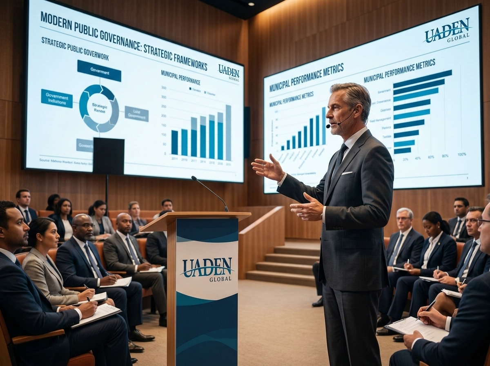
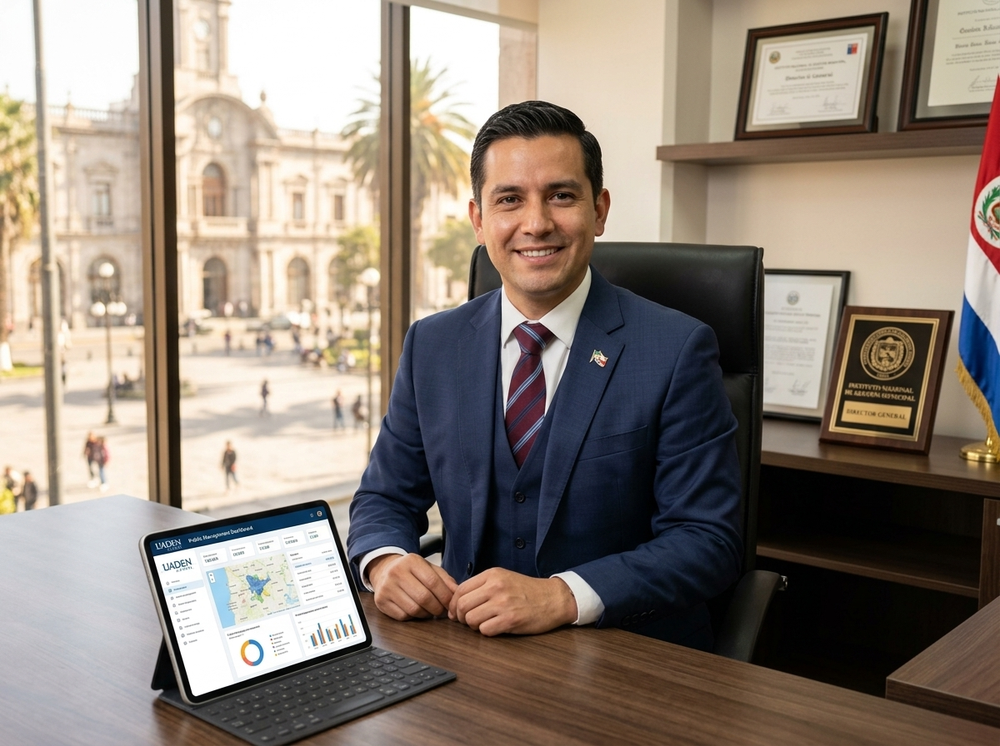
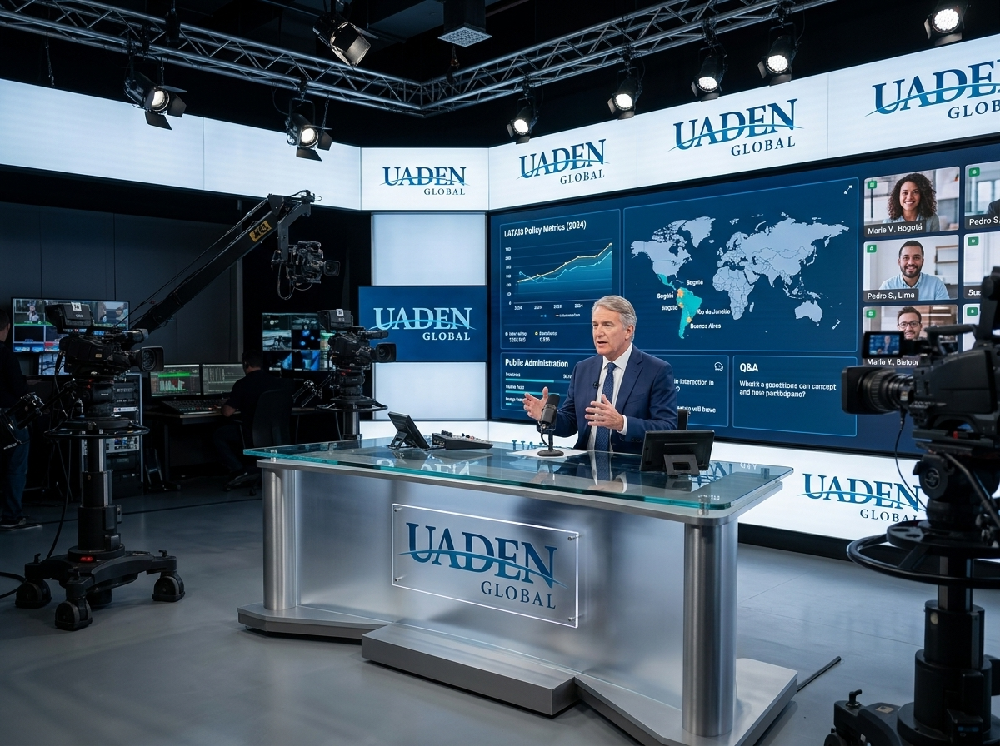

100
horas de formación en formato híbrido
En vivo · Online Diplomado Internacional
Herramientas, conocimiento y nuevas perspectivas para comprender y transformar la administración pública.
Descargar el folleto completo PDF · 18 páginas · 11,7 MB100
horas de formación en formato híbrido
75
ponencias pregrabadas de especialistas
12
expertos moderadores en vivo
4
sábados intensivos de 1:00 a 7:00 PM
El programa
Diseñado para quienes desean fortalecer sus conocimientos sobre gestión pública moderna, aplicable a la administración municipal y también a los ámbitos estatal, provincial, regional y nacional. Combina formación sincrónica y contenidos especializados.

Fechas y horarios
Cuatro jornadas intensivas para conocer herramientas, experiencias y enfoques aplicables a los nuevos desafíos de la administración pública.
Sábado 07 de noviembre
1:00 PM — 7:00 PM
Sábado 14 de noviembre
1:00 PM — 7:00 PM
Sábado 21 de noviembre
1:00 PM — 7:00 PM
Sábado 28 de noviembre
1:00 PM — 7:00 PM
Horario de Houston (Estados Unidos). Verifique la equivalencia en su país al inscribirse.
Universidad Americana de Negocios de los Estados Unidos.
Participe en vivo o acceda a las clases de forma asincrónica.
Capacite a todo su equipo con una sola conexión.
Podrá solicitar el acceso asincrónico a las jornadas.
Temario
Cuatro jornadas de seis ponencias cada una, de 13:00 a 19:00, que recorren de forma transversal las principales dimensiones de la gestión pública municipal y regional: de la planificación y la administración interna a la transformación digital, la ciudadanía, el desarrollo territorial y la evaluación de resultados.
Jornada 01
Fundamentos · Gobernanza · Planificación · Políticas públicas · Procesos · Liderazgo
Jornada 02
Finanzas · Ingresos · Talento humano · Compras · Transparencia · Indicadores
Jornada 03
Digitalización · Inteligencia artificial · Servicios · Inclusión · Marketing público · Participación
Jornada 04
Desarrollo económico · Innovación · Ciudades inteligentes · Crisis · Proyectos · Excelencia · Modelo integral
01
13:00 — 14:00
02
14:00 — 15:00
03
15:00 — 16:00
04
16:00 — 17:00
05
17:00 — 18:00
06
18:00 — 19:00
07
13:00 — 14:00
08
14:00 — 15:00
09
15:00 — 16:00
10
16:00 — 17:00
11
17:00 — 18:00
12
18:00 — 19:00
13
13:00 — 14:00
14
14:00 — 15:00
15
15:00 — 16:00
16
16:00 — 17:00
17
17:00 — 18:00
18
18:00 — 19:00
19
13:00 — 14:00
20
14:00 — 15:00
21
15:00 — 16:00
22
16:00 — 17:00
23
17:00 — 18:00
24
18:00 — 19:00
Horarios en hora central de Estados Unidos (Chicago y Houston comparten huso). Verifique la equivalencia en su país al inscribirse.
Material adicional asincrónico
Como complemento de las 24 horas de formación en vivo, se incorporan 30 temas adicionales para profundización, consulta y estudio individual.
Conceptos fundamentales, competencias y responsabilidades de los gobiernos locales.
Relaciones entre los diferentes niveles de gobierno.
Herramientas para organizar el crecimiento y desarrollo del territorio.
Planificación, prestación, mantenimiento y evaluación.
Planificación de movilidad, transporte sostenible y accesibilidad.
Modelos modernos de recolección, tratamiento y economía circular.
Gobernanza, infraestructura, eficiencia y sostenibilidad.
Políticas ambientales y protección de recursos naturales.
Adaptación, mitigación y planificación climática territorial.
Gestión energética y transición hacia modelos sostenibles.
Coordinación institucional y políticas preventivas.
Programas comunitarios y construcción de territorios seguros.
Programas de oportunidades, educación, empleo y participación.
Envejecimiento activo, cuidados y servicios municipales.
Diseño de políticas locales de protección y desarrollo.
Incorporación de la perspectiva de género en las políticas públicas.
Diseño universal, servicios accesibles y eliminación de barreras.
La cultura como herramienta de desarrollo y cohesión social.
Promoción del destino y desarrollo de economías locales.
Cooperación descentralizada, hermanamientos y redes internacionales.
Proyectos, organismos internacionales y mecanismos de financiación.
Modelos de cooperación entre gobiernos y sector privado.
Alternativas para financiar proyectos de desarrollo territorial.
Integración digital de trámites y servicios ciudadanos.
Protección de sistemas, información y datos institucionales.
Principios, responsabilidades y gestión segura de información.
Digitalización, conservación, trazabilidad y acceso documental.
Protocolos y estrategias de comunicación frente a situaciones críticas.
Herramientas para gestionar conflictos institucionales y comunitarios.
Metodología práctica para convertir diagnóstico, planificación y prioridades en un programa integral de transformación.

¿A quiénes está dirigido?
Es especialmente útil para quienes desempeñan funciones de planificación, coordinación, dirección, gestión de proyectos, atención ciudadana, administración, políticas públicas, desarrollo territorial o toma de decisiones dentro de instituciones públicas.
Dirección y coordinación
Un equipo con experiencia directiva real en gobiernos municipales y en instituciones del Estado, que acompaña el programa en español y en portugués.
Director del programa
Coordinador área Brasil y Portugal
Certificación
Cada participante recibirá un certificado de participación por parte de UADEN (Universidad Americana de Negocios de los Estados Unidos).
Como exigencia de la universidad, el ejecutivo debe estar presente durante todo el programa para obtener dicho certificado.
Al finalizar usted descarga:
La máxima experiencia en aprendizaje
Hable, chatee e interactúe con el instructor y sus compañeros en tiempo real.
Capacite a cuantas personas requiera con una sola conexión, sin gastos de viaje, hospedaje ni tiempo fuera de la oficina.
Disponible como aplicación móvil para dispositivos Apple y Android.
Envíe hasta 5 preguntas antes de cada clase. Los ponentes incluirán esas respuestas durante el diplomado.
Al finalizar recibirá un documento con los correos de contacto de sus colegas de cursada, para generar red profesional después del seminario.
Participar es fácil
Garantizamos calidad y backup en caso de problemas con su conexión, y le ofrecemos un curso sin límite de asistentes, con chat interactivo y doble certificado.
Su asesor le orienta con la inscripción, que se administra desde USA.
Una vez hecho el pago recibe el invoice, la carta de bienvenida y el acceso.
72 horas antes del evento le llamamos para entrenar su acceso a la plataforma.
Puede enviar preguntas previas al orador hasta 72 horas antes del curso.
Apuntes, diplomas y material adicional se descargan al finalizar el evento.

Inversión
Pago de contado
Valor regular USD 288
USD 188
En una sola exhibición. Ahorro inmediato de USD 100.
Precio especial para el pago único hasta el 22 de octubre.
Reservar con beca parcialPago en cuotas
USD 144 + USD 144
Consulte con su asesor la disponibilidad del plan en su país.
Consultar el plan en cuotasOrganizaciones, municipios, instituciones y equipos de trabajo acceden a descuentos especiales por inscripciones múltiples. Capacite equipos completos optimizando la inversión institucional.
Para facilitar la participación internacional, aceptamos:
¿Quién organiza y avala?
UADEN Global representa y difunde los programas, metodologías y estándares académicos de la Universidad Americana de Negocios de los Estados Unidos, formación continua dependiente de la Cámara de las Empresas Latinas en los Estados Unidos.
Desde 2010 ha contribuido a la formación de más de 35.000 graduados en Estados Unidos y América Latina. A partir de 2020 inició su internacionalización mediante el sistema UADEN Global, con un ecosistema educativo en español, inglés y portugués.
Su ecosistema reúne a más de 350 expertos internacionales, entre ellos consultores de empresas Fortune 500, autores, empresarios, conferencistas y mentores de reconocimiento internacional.
Folleto del programa
Temario de las 24 ponencias en vivo, los 30 contenidos asincrónicos, fechas, certificación, inversión y medios de pago en un solo documento, listo para presentar a su área de capacitación o compartir con su equipo.
¿Está listo para dar el siguiente paso?
Nuestro equipo de asesores le brindará atención personalizada para resolver sus dudas, orientarle durante el proceso de inscripción y ayudarle a elegir la mejor opción de participación.
+1 223 240 0531Atención por WhatsApp. La inscripción se administra desde Estados Unidos.